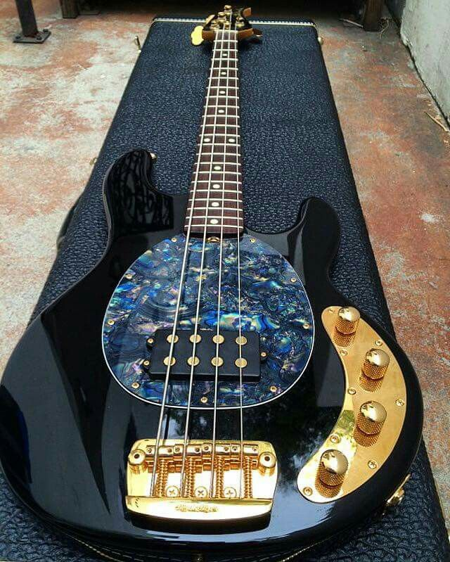

Análisis de anatomía, técnicas de ejecución y su impacto en la música.
¿Por qué es fundamental el Bajo Eléctrico?
El bajo eléctrico cumple una doble función irreemplazable: conecta el pulso rítmico del bombo de la batería con la estructura armónica de las guitarras y la voz.
En géneros como el rock alternativo y el glam rock, el bajo deja de ser un simple acompañante para tomar protagonismo mediante líneas melódicas y riffs llenos de actitud.

Figura 2: Bajo eléctrico de cuerpo sólido con pastillas magnéticas.
Componentes y Técnicas del Instrumento
Partes principales de un Bajo Eléctrico (Lista Desordenada)
Clavijero y Clavijas de afinación: Permiten ajustar la tensión de las cuerdas para obtener la nota exacta.
Mástil y Diapasón: Superficie de madera dividida por trastes metálicos donde se digitan las notas.
Pastillas (Pickups): Transductores electromagnéticos (como tipo Precision o Jazz Bass) que capturan la vibración de las cuerdas.
Potenciómetros de control: Perillas dedicadas a regular el volumen general y el recorte de tono (frecuencias agudas).
Puente fijo: Pieza metálica anclada al cuerpo que sostiene el extremo inferior de las cuerdas y permite calibrar la octavación.
Pasos para calibrar y afinar antes de un ensayo (Lista Ordenada)
Conectar el bajo al afinador cromático o pedal mediante un cable de instrumento TS de 1/4 de pulgada.
Girar el potenciómetro de volumen del instrumento al máximo para enviar una señal clara.
Pulsar la cuarta cuerda al aire y ajustar la clavija hasta alcanzar la nota Mi (E1).
Repetir el procedimiento para la tercera cuerda en La (A1), segunda en Re (D2) y primera en Sol (G2).
Comprobar la octavación en el traste 12 para asegurar que el instrumento mantenga la afinación a lo largo de todo el mástil.
Demostración Multimedia: Bajo en Vivo (Davie504)
A continuación, se presenta una demostración en vivo de la sonoridad y técnica de slap en el bajo eléctrico[cite: 1]: